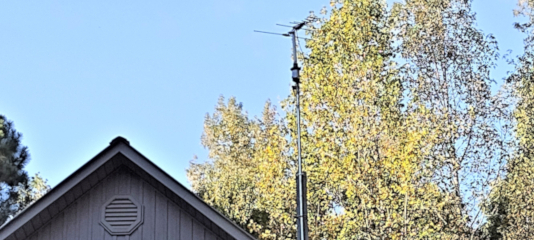

Home
Survey
Hardware
Images
Cutting the Cord (or Destroying the Satellite Dish)

Cancel cable or Satellite subscription and save money
A lot of people are tired of paying high prices for cable/satellite subscriptions. The
average customer pays over $100 a month for their subscription. With free over the air
boadcast and streaming services, many of us have already cut the cord. Below is some
information on what you need for alternatives to cable or satellite subscription.
Over the Air Broadcast
You may already have the necessary equipment for "over the air"(OTA) broadcast. If not,
take a look at the list below.
- A TV capable of digital reception or a digital TV convertor box.
- An Antenna
- Coaxlial cable (and connectors, if not included)
- Antenna mast (optional)
- Antenna amplifier (optional)
- Antenna rotator (optional)
Modern TVs are built to process digital broadcasts. If you have an older analog model, you will have to buy
a digital TV convertor box to view OTA broadcasts. Once you have an antenna connected you will have to scan
for TV stations. You will use your remote to navigate to the setup for programming the channels. Each TV is
different, but for mine, I select 'Menu' from the remote and then from the screen, I make the following
selections "Setup -> Program channel -> Auto". It is fairly straight forward.
Do NOT fall for the hype that there is a special antenna for HDTV or digital TV. If you already have
an old antenna and you are satisfied with the performance then there is no neeed to buy another antenna. Even if you
buy the best antenna on the market, you may still have a problem with reception. When the manufacturers of the
antenna claim it has a range of say 60 miles, this is assuming there are no obstacles (building, hills, trees, etc.)
between your location and the broadcast station. If you live close to the broadcast stations, you may be able to get
by with a small indoor antenna. In other cases (such as mine), you may need to have use an outdoor antenna mounted
high on a mast. In my case, I needed to mount my antenna high in order to get above (or nearly above) the tree tops.
The picture above shows my rooftop antenna.
A rotator is also nice to have. In my case, I receive broadcasts from two different cities which
are located in opposite directions. I need to point my antenna in one direction to receive the
stations form one city, and then reposition the antenna to get stations from the other city.
Streaming
Besides OTA broadcast, you will probably want to view shows that are streamed over the internet.
This means that you will have to have access to the internet and you will need either a streaming
device or a smart TV.
A smart TV has streaming hardware built into the TV. Although smart TVs are user friendly for
for streaming, there are some disadvantages as shown below:
- The remote conrol does not have keypad containing numbers. This means that if you want to
change OTA channels you have to scroll thru the channels sequentially.
-
Your internal streaming hardware may become outdated over time. With an external streaming device,
you can buy a new external streaming device at a reasonable price to get the latest features. But when
the steaming capability is built into the TV, you need to purchase another TV if you want to update
to the latest features.
-
I am not sure if the following is true on all smart TVs, but the one I own, only provides one option
when you scan for channels, which is to reset all the stations. My other set allows you to either reset all the
stations or enter stations manually. If your TV can find all of the stations with the antenna pointed
in one direction then there is no problem. In my case, I don't get all of the availabe stations with
the antenna pointed in one direction. This means that initially I point the atenna in the direction
that gets most of the stations and scan for channels, so that all of the stations are set (or reset). Then I point
the antenna in the direction of the rest of the stations, scan and manually add them (without resetting/erasing
the previous channels). With my smart TV, I do not have this option which menas I can only get channels
from one location or the other.